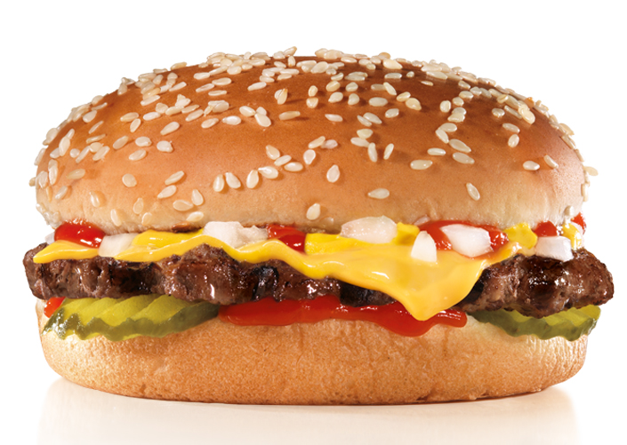

My Cheeseburger Recipe

Description
So, this is just a basic recipe for a plain Cheeseburger. Hopefully it's easy to follow along lol.
Ingredients:
- Ground beef
- Onions (or onion powder)
- Garlic Powder
- Butter
- Hamburger bun
Steps:
- Take a handfull of ground beef and lightly form it into a patty. You don't want it to be too tightly formed because when it's loosely formed, it lets the cheese seep into the little crags/openings when it melts.
- Put it into a skillet after preheating it and spreading melted butter in it. Doesn't have to be too much butter since the meat creates it's own grease.
- Let it cook on one side for about 3-4 minutes and then flip.
- Repeat for the other side, but when the other side is almost done, take a piece of American cheese and set that ontop of the patty so it melts. Cover it with a pan lid if you'd like.
- Spread a little bit of butter on the hamburger bun and toast it for a little bit, careful not to let it burn.
- Afterwards, remove the patty and put on your pickels,mustard,ketchup,etc..
Side note:You could brown the butter while it's coating the pan or when toasting the bun to see how that tastes.